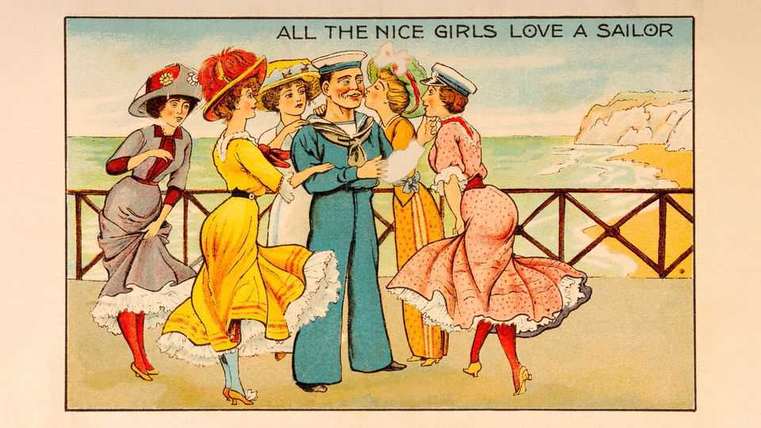
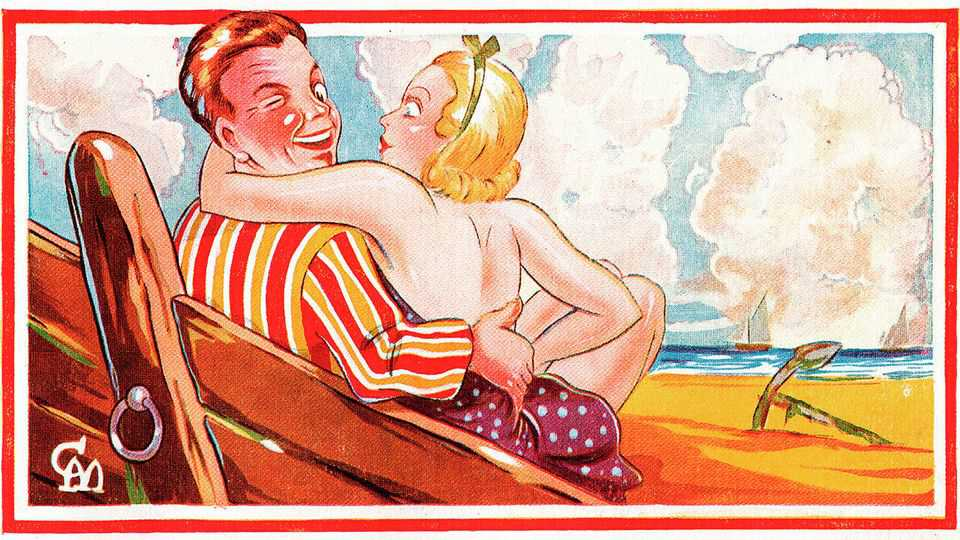
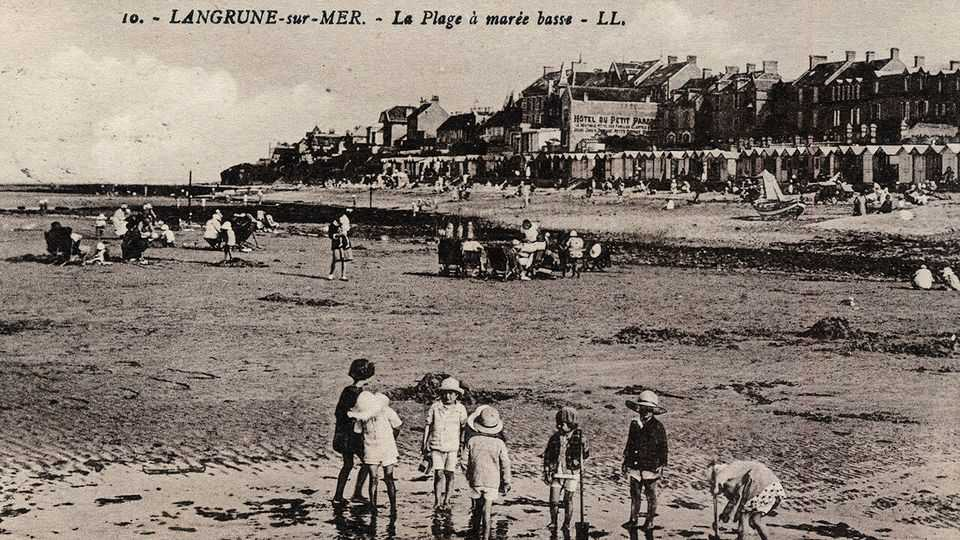

The world is entering a post-postcard era
This means fewer ghastly pictures of sunsets. More ghastly Instagram

Jul 30th 2026
The postcards looked lighthearted, frivolous even. One offered this “Vue” of a French beach; another that “Plage” in Normandy; another a “Rue” in a pretty coastal town. They could not have been more serious. It was March 1942. Britain was readying itself to fight the Nazis on the beaches and on the landing grounds. But they had very little idea what those beaches and landing grounds looked like.
Admiral John Godfrey, the head of British naval intelligence, took to the BBC with a public plea. Your photos and postcards, he said, might look like holiday frivolity but “experts may see a lot more”. He asked people to send them in—and they did. In droves. 10,000 were expected; 10m were received. Then British intelligence started to sort them; not now under words like “rue” or “plage” but under different names: under “Omaha”, “Sword” and “Juno”. The preparations for what would become known as “D-Day” had begun.
Postcards—cheap, smutty, sometimes saucy—are often assumed to be silly but their effects have been very serious indeed. They have changed the world. One historian has called them “the largest class of artefacts humankind has ever exchanged”. An international treaty was signed to enable their travel across borders; wars have been chronicled with them; battles planned using them. The French philosopher Jacques Derrida even wrote a book about them, rich in phrases such as “supplementary prosthesis”.

Now they are dying out. All (flat) physical post is in trouble: 20 years ago the Royal Mail, Britain’s postal service, sent 20bn letters a year; by 2025 that number was 6.6bn. Postcards are doing worse still: only 8% of British adults now send postcards, according to a study by English Heritage, a charity. The postcard, it observed, as it launched a summer campaign this July to revive them, is “in terminal decline”.
Its rise was similarly swift. The first postcard was sent in 1840, when a British novelist called Theodore Hook sent a card through the post to himself in Fulham, a London neighbourhood. This card featured a picture (which would become common) and (soon to be commoner still) a lame joke. The idea caught on. In September 1869 Austria’s postal service started to sell “Correspondenz-Karten”; within three months, as Lydia Pyne records in her book “Postcards”, 3m had been sent.
Their advantages were clear. They lifted a physical burden from postal services (a single leaf of card was far lighter and cheaper to transport than the triplicate thickness of a letter in an envelope) and a literary burden from the writer: like teenagers turning to text, Victorians relished the limits imposed on their prose. Some 200bn to 300bn were estimated to have been in circulation between 1895 and 1915. Britons, with their empire, were particularly keen. Postcards, says Ms Pyne, were the “first worldwide social network”.

And they were loved. A physical letter is not merely words, it is “far more personal, even intimate, than a text or email”, says Robert Douglas-Fairhurst, a professor of English at Oxford. Part memo, part memento, it bears the “physical traces of the person who sent it”.
Postcards changed the way the world was seen. Often, critics said, by making it look worse. Their visual style—palm trees, sunsets, saturated colour—is as recognisable as a Greek vase and, thanks to photographers like Martin Parr, as parodied. The postcard became a byword for saccharine beauty (“picture postcard”) and even a unit of measurement (“postcard-sized”).
Cheap and cheerful, they gave tourists an invaluable sense of place—and intellectuals an invaluable sense of superiority. George Orwell, a writer of many things (though not, one senses, of many postcards) noted comic postcards’ appearance of “overpowering vulgarity” and general “hideousness”. Though arguably they are not as hideous as the world of Instagram-influencers that replaced them. It is hard to look at the era of the postcard and not wish that you were there.■